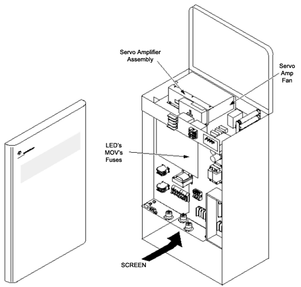

Replace the fans that have developed audible noise or that have stopped functioning.
For a noisy or failed fan in the Allen Bradley Servo Amp (46-297910P1), the entire amplifier needs to be replaced.
For a noisy or failed fan in the West Amp Servo Amp (46-296136P1), order and replace the fan (46-229909P1).
Illustration 1: CRPDU PM Checks
